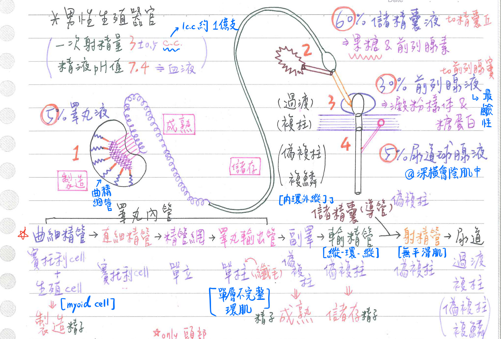
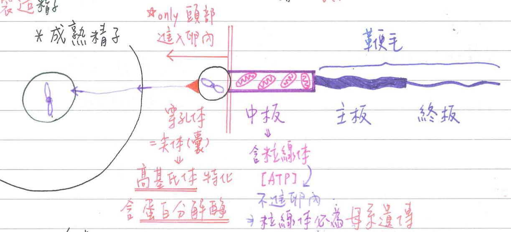
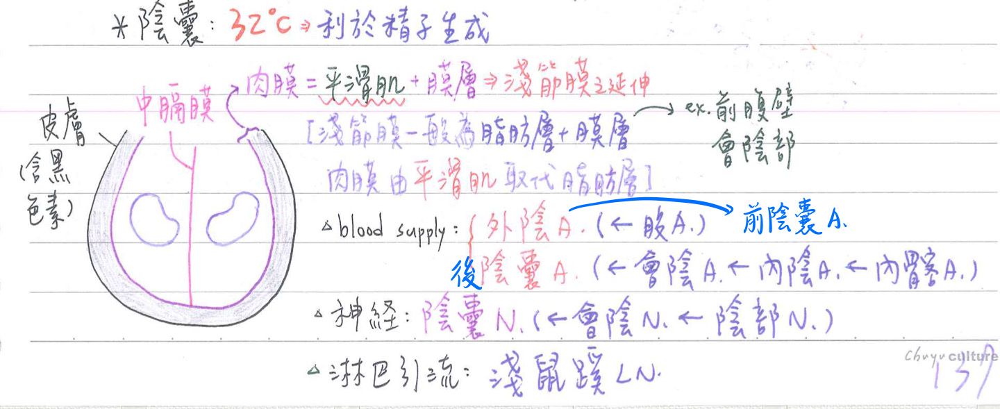
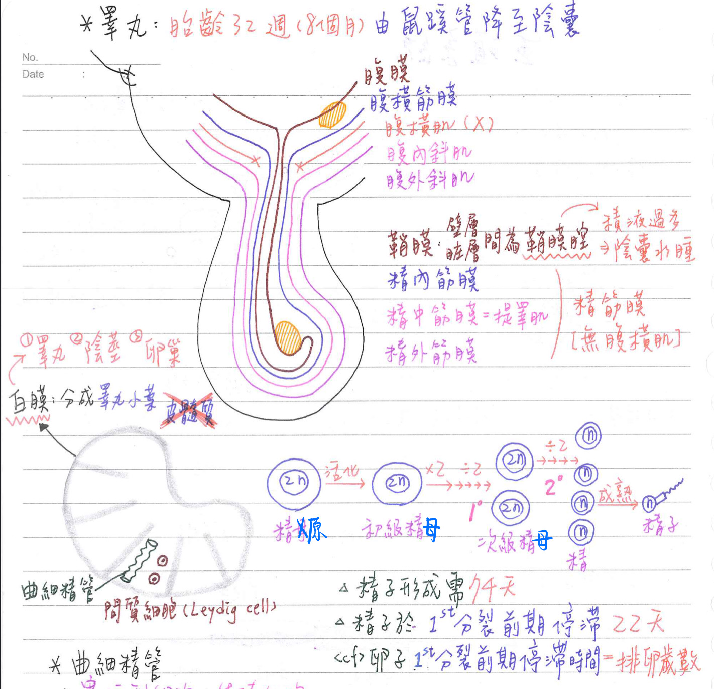
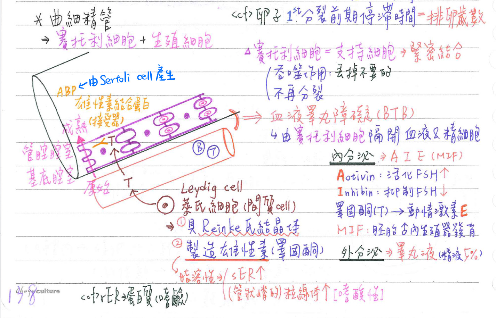
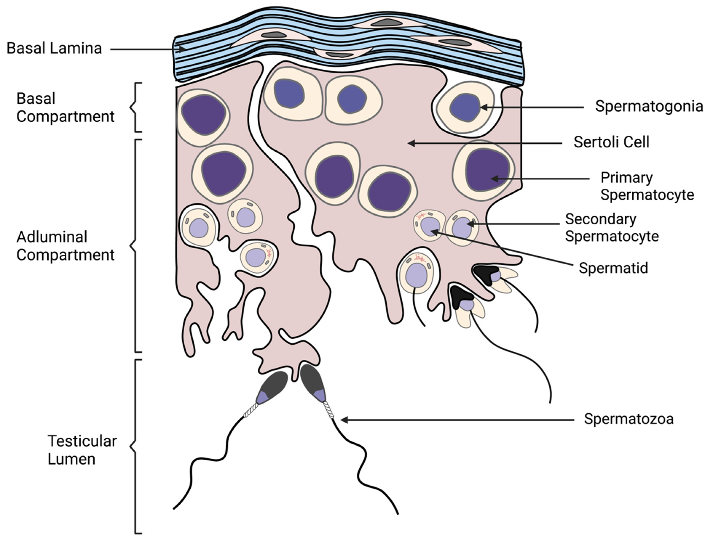
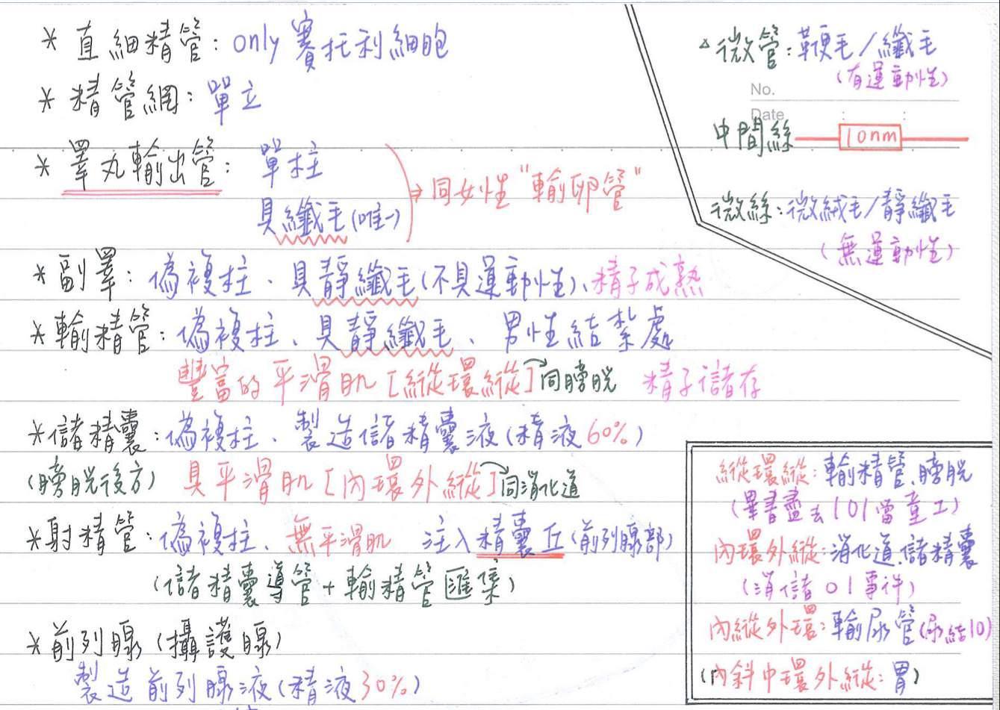
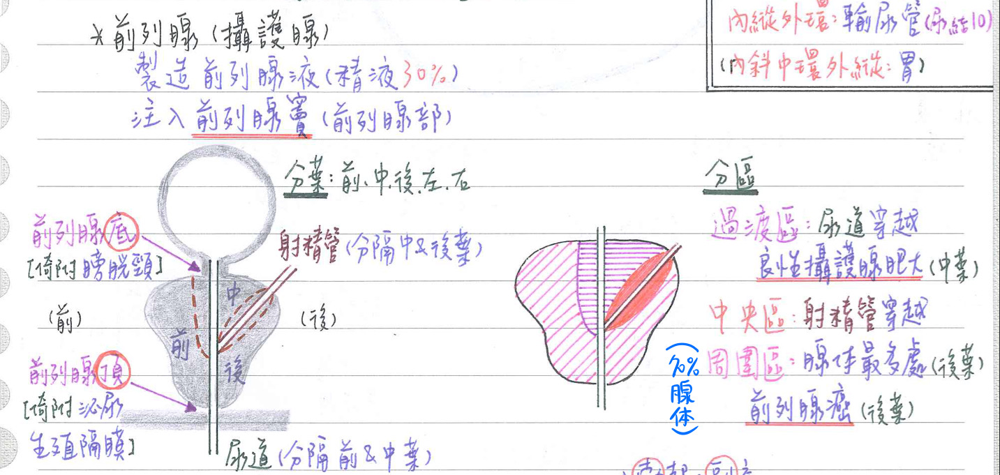
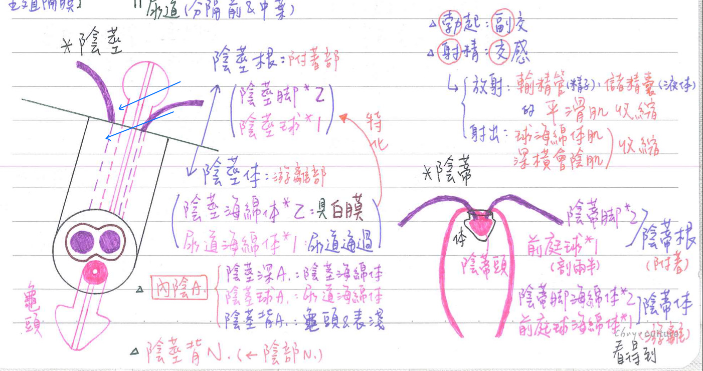

♂️ 生殖系統-男性生殖器官
男性生殖系統總覽
- 睪丸(testis)
曲細精管(seminiferous tubule)：賽托利细胞+生殖細胞；肌樣細胞(myoid cell)
→直細精管(tubuli recti)：賽托利細胞
→精管網(rete testis)：單層立方上皮
→睪丸輸出管(ductuli efferentes)：單層柱狀上皮[男性生殖道唯一具有纖毛]；單層不完整環肌備註
趙神說睪丸輸出管是單層柱狀上皮
但FC說是偽複層柱狀上皮 - 副睪(epididymis)：偽複層柱狀上皮；平滑肌(環肌)
- ★[109-1]輸精管(ductus deferens)：偽複層柱狀上皮；平滑肌(縱-環-縱]
- ★儲精囊(seminal vesicle)：偽複層柱狀上皮；平滑肌：內環外縱]
- 射精管(ejaculatory duct)：偽複層柱狀上皮；無平滑肌
- 輸精管&儲精囊導管匯集成射精管→注入精囊丘(位於尿道)
- 尿道(urethra)：
- 前列腺部(prostatic part)：過渡上皮
- →膜部(membranous part)：複層柱狀上皮 [不是偽複層柱狀！]
- →陰莖部(spongy part)：偽複層柱狀上皮+複層鳞狀上皮
精液(semen)
- 精子(sperm)：
- 數量：約1億/c.c
- 精子數目低於2000萬/c.c→不能自然致孕
- [重點]製造：睪丸(曲細精管)
- [重點]成熟：副睪丸
- [重點]儲存：副睪丸、輸精管
- 數量：約1億/c.c
- 精漿(seminal plasma)=精液(fluid)：源自生殖輔助腺體(accessory gland)[愛考各腺體分泌物的佔比]
- 儲精囊液(60%)：經射精管注入尿道前列腺部之精囊丘
- 精子活動的能源主為果糖，由儲精囊提供
- 精液中的前列腺素(幫助精子運動)，由儲精囊製造
- 前列腺液(30%)：注入尿道前列腺部之前列腺竇
- 前列腺液為精液中最鹼性→可助精子的活動力
- 前列腺液具澱粉樣體(corpora amylacea = prstatic concretions)，主含糖蛋白(glycoprotein)
- 前列腺：男性的生殖輔助腺體中體積最大者
💡許多組織都可以產生前列腺素，但前列腺不行
- 睪丸液(5%)：經曲細精管→直細精管→精管網→睪丸輸出管
- 尿道球腺液(5%)：注入尿道陰莖部
- [男性]尿道球腺(bulbourethral gland=Cowper gland)：位於泌尿生殖膈膜之深橫會陰肌中(會陰深隙)
- <cf>[女性]前庭大腺：位於會陰淺隙；開口於陰道前庭
- 儲精囊液(60%)：經射精管注入尿道前列腺部之精囊丘
- 一次射精量：2.5〜3.5c.c
- 精液pH值：7.35〜7.50(微鹼性)
- 鹼性環境利於精子的運動；陰道的酸性環境不利精子運動

成熟精子
- 頭(head)：
- 具23個染色體(單套)：約含2.2萬個基因(gene，成份為DNA)
- 穿孔體(acrosome)=尖體(尖囊、頭帽)：
- 由高爾基體(Golgi complex)衍生
- 含透明質酸酶(hyaluronidase)、蛋白分解酶(proteinase)
→助精子之DNA進入卵核中
💡穿透卵的：細胞膜、細胞質、核膜
- 中板(mid piece)：含粒腺線→產生ATP，以供鞭毛運動
- 尾(tail = principle piece + end piece)：
- 具鞭毛(中軸由中心粒衍生)→司運動
- 受精時：只有精子頭部進入卵內，而中板及尾則遺留在卵外
⇒粒腺体幾乎100%母系遺傳

陰囊(scrotum)：內溫約32~35℃(利於精子生成)
- 外層：皮膚(含多量黑色素)
- 內層：★[108-1]肉膜(dartos)=平滑肌+膜層(membranous layer)
- 前腹壁、會陰部淺筋膜(原本是脂肪層+膜層)之延伸，但由平滑肌取代原脂肪層
- 形成中膈膜(septum)，隔開左右睪丸
- 支配血管：
- 前陰囊A(←深/淺外陰A←股A)
- 後陰囊A(←會陰A←內陰A←內髂A)
- 支配神經：
- 前半：腰神經叢之髂鼠蹊N、生殖股N(生殖枝)
- 後半：薦神經叢之陰囊N、股後皮N
- 陰部N(pudendal n)→
- 下直腸N(inf. rectal n)
- 會陰N(perineal n)→陰囊N & 陰莖背N(dorsal n. of penis)
- 淋巴引流：淺鼠蹊淋巴結

睪丸(testis)：胎齡32週，自腹腔經鼠蹊管，降至陰囊中
睪丸包膜
- 外精筋膜(external spermatic fascia)：腹外斜肌腱膜
- 中精筋膜(middle)=提睪肌(cremaster m)：腹內斜肌延伸
- 內精筋膜(internal)：腹橫筋膜(fasia transversalis)
- 腹橫肌腱膜：不參與精筋膜(spermatic fascia)形成
- 鞘膜(tunica vaginalis)
- 為腹膜延伸，★[107-2]鞘突(process vaginalis)之遺跡
- 分為壁層(parietal) & 臟層(visceral)
- 兩層之間稱鞘膜腔；若聚積漿液過多→陰囊水腫(hydrocele)
睪丸-血管
- 睪丸A：為腹主動脈的直接分枝
- 右睪丸V注入下腔静脈；左睪V注入左腎V
睪丸-結構
- 白膜(tunica albuginca)：睪丸被膜(capsule)：
- 由★[109-2]緻密結締組織構成，
- ★[110-1]形成睪丸縱膈(mediastinum testis)：將睪丸分成眾多小葉(約250小葉/個睪丸)
- 人體構造具白膜者：睪丸、卵巢、陰莖
- 睪丸小葉(lobule)：含曲細精管(1~4條/小葉) & 間質細胞

曲細精管(seminiferous tubules)：約400~600條
- 上皮層：含生殖細胞(spermatogenic) & 賽托利細胞(Sertoli)
⇒ ★[108-2]複合型複上皮(complex stratified epi.) - 基底層：具肌様細胞(myoidcell)；似平滑肌，可產生蠕動波
睪丸-生殖細胞 [趙神的書本中文翻譯有點怪，已修正]
- 生成過程：
- ★[110-2]精原細胞(spermatogonia, 2n)：於青春期以後才開始分化
- type A=幹細胞(stem cell)
- type B=前驅細胞(progenitor)
- ⇒初级精母細胞(1° spermatocyte, 2n)[體積最大]
- 經1°分裂⇒ 次級精母細胞(2° spermatocyte ,2n)
- 經2°分裂⇒ 精細胞(spermatid,n)
- ⇒精子(sperm=spermatozoa, n)[體積最小]
- spermatogenesis(精子生成)：從spermatogonia ⇒ sperm(=spermatozoa)之過程
- spermatocytogenesis(精母細胞生成)：從 spermatogonia ⇒ 2° spermatocyte 之過程
- spermatidogenesis：從 2° spermatocyte ⇒ spermatid 之過程
- ★[107-2]spermiogenesis：從spermatid ⇒ sperm(=spermatozoa) 之過程
- ★[110-2]精原細胞(spermatogonia, 2n)：於青春期以後才開始分化
- [重點]精子之形成過程：第一次分裂之前期停滯約22天，共約需74天
- 1個初級精細胞(2n)經減數分裂產生4個精細胞(n)

睪丸-賽托利氏細胞(Sertoli cell)：支持細胞
- 支持、保護、滋養精子
- [重點]同時兼具內分泌及外分泌功能
- 內分泌：[A/I/E]
- 活化素(Activin，活化FSH)、抑制素(Inhibin，抑制FSH)
- 將睪丸固酮(T)轉變為動情激素(E)
- 米氏管抑制因子(MIF)：於胚胎期助男性內生殖器官之發育
- GnRH(下視丘)→FSH(腦下腺)→A、I、E(睪丸之Sertoli cell)
- 外分泌,：睪丸液(佔精液5%)⇒利於精細胞運送
- 內分泌：[A/I/E]
- 賽托利氏細胞結合複體(Sertoli-Sertoli junctional complex)
- 結構：細胞間形成緊密結合(tight junction)=閉合式連結(occluding j.)
- sER沿緊密結合平行分佈；肌動蛋白絲[actin filament；即微絲體(microfilament)]分佈於緊密結合與sER之間
- 功能：
- 分隔腔室(compartment)：基底腔室(basal) vs. 管腔腔室(luminal)
- 基底腔室(basal compartment)：含較原始生殖細胞(spermatogonia；行有絲分裂)
- 管腔腔室(adluminal compartment)：含較成熟生殖細胞(spermatocyte；行減數分裂)
- 形成血液睪丸障礙(blood-testis barrier, BTB)：分隔血液與生殖細胞，保護生殖細胞不被免疫系統攻擊
- 分隔腔室(compartment)：基底腔室(basal) vs. 管腔腔室(luminal)
- 結構：細胞間形成緊密結合(tight junction)=閉合式連結(occluding j.)
- 產生雄性素結合蛋白(androgen-binding protein, ABP)
=雄性素接受器，接受雄性素之作用⇒幫助精子的生成
- 吞噬作用：去除精子生成過程之產生殘餘體(residual body)
- 不能再分裂
睪丸-間質細胞=萊狄士氏細胞(Leydig cell)
- 具Rinke氏結晶體(Reinke crystals)、脂色素(lipochrome pigment)、油滴(lipid droplet)
- 製造睪丸固酮(雄性素)
- 平滑型內質網(sER)發達
- 具管狀嵴(tubulovesicular cristae)的粒線體，細胞質呈嗜酸性
- sER+粒線體：為製造steroid細胞(腎上腺皮質、睪丸、卵巢)的特徽
💡Leydig cell：分泌androgen
Sertoli cell：接收androgen- 雄性素濃度有3個高峰期：
- 胚胎期(助男性外生殖器發育)
- 新生兒期
- 青春期(助第二性徵表現)，此後隨年齡增加而遞減
- GnRH(下視丘) → LH(腦下腺) → T (Leydig cell)

睪丸-直細精管(tubuli recti)：約 400〜600條
- 僅由Sertoli細胞構成，無生精細胞(spermatogenic cell)
- 末端由單層立方上皮構成
睪丸-精管網(rete testis)
- 由單層立方上皮構成
- 位於睪丸縱膈(mediastinum testis)
- 睪丸縱膈：富含血管、結缔组織
睪丸-睪丸输出管(ductuli efferentes)：约12~20條 ≒(女)輸卵管
- 為單層柱狀上皮
- 具纖毛(cilia)，幫助運送精子；為男性生殖道唯一具纖毛處
- 具 1層不完整環走平滑肌
副睪(epididymis)：位於睪丸之外後方
- 構造：
- 由彎曲管子(約12~20條)匯集成1條(長度6m⇒緊聚成7.5cm)
- 具頭(最寬/位於睪丸上極)、體、尾(最窄/位於睪丸下極)等3部份
- 具偽複層柱狀上皮 & 1層環走平滑肌
- 具靜纖毛(stereocilia)：構造似微絨毛，不具運動性(因為是由微絲體構成)
- 功能：
- 精子成熟、運送精子
- 產生去活能化因子(decapacitation factor)：使精子暫不能與卵結合，直至女性生殖道再活能化

精索(spermatic cord)：直徑=16 mm(11~22mm)
- 位置：起自副睪尾部，經鼠蹊管⇒ 終至鼠蹊管內環
- ★[107-2]★[109-1]內容物：
- 輸精管(ductus deferens) & 輸精管A(←臍A 、
下膀胱A)備註
臍動脈分支出的輸精管動脈=[女性]子宮動脈
此外：下膀胱A、中直腸A也都有分支供應輸精管 - 睪丸A(=int. spermatic a)、提睪肌A(=ext. spermatic a)
- 蔓狀靜脈叢(pampiniform plexus) & 睪丸V；淋巴管
- 生殖股N(生殖枝) & 自主神經(交感神經)
- 鞘膜(tunica vaginalis)；為腹膜延續；★[107-2]鞘突(process vaginalis)之遺跡)；★[109-1]含三層筋膜[內精筋膜、中精筋膜(特化為提睪肌)、外精筋膜]
- 輸精管(ductus deferens) & 輸精管A(←臍A 、
- 精索靜脈曲張(varicocele)：好發於左側，可導致不孕
- 原因：左睪丸V注入左腎V有關(垂直比較難走)
- 右睪丸V：獨立注入下腔靜脈
輸精管(ductus deferens=vas deferens)
- 路徑：
- 由睪丸後方 ⇒ 經鼠蹊管 ⇒ 繞經下腹壁A ⇒ 跨過外髂A ⇒ 跨過閉孔A
⇒ 跨過輸尿管 ⇒ 末稍形成壺腹部(ampulla)，在膀胱後面與儲精囊導管匯集成射精管
- 膀胱後面由內→外的構造：輸精管壺腹→輸尿管→儲精囊
- 由睪丸後方 ⇒ 經鼠蹊管 ⇒ 繞經下腹壁A ⇒ 跨過外髂A ⇒ 跨過閉孔A
- 構造：
- 內襯上皮：偽複層柱狀上皮，具靜纖毛
- 平滑肌：豐富的平滑肌層為最顯著特徵；呈★[109-1]縱-環-縱排列
- 男性結紮：輸精管(通常由陰囊的皮膚下刀)⇒男性結紮後，睪丸功能正常
- 睪固酮製造正常，且經血管正常運出
- 精子製造正常，但無法順利經輸精管運出 ⇒ 故退化而被吞噬、吸收
儲精囊(seminal vesicle)
- 位置：位於膀胱後方
- 功能：製造儲精囊液(佔精液60%，但無儲存精子功能)
- 構造：
- 內襯：偽複層柱狀上皮
- 管腔具多級皺褶及隱窩
- 管腔外圍具雙層平滑肌；內環外縱
💡射精：輸精管、儲精囊之平滑肌收縮
射精管(ejaculatory duct)
- 位置：由儲精囊導管、輸精管匯集而成
- 功能：將精液注入尿道前列腺部之精囊丘
- 構造：內襯為偽複層柱狀上皮；無平滑肌
前列腺/攝護腺(prostate)：約20gm
- 前列腺 ★[107-2]≒ [女性]尿道旁腺(paraurethral gland)
- 位置：位於膀胱下方
- 前列腺A：主要源自下膀胱A
- 功能：製造前列腺液(佔精液30%)，注入尿道前列腺部之前列腺竇
- 分葉(lobe)：前、後、左、右、中等五葉
- 射精管：分隔中葉、後葉
- 尿道：分隔中葉、前葉
- 分區(zone)：
- 中央區(central zone)：具25%腺體；射精管穿越其間
- 周圍區(peripheral zone)：具70%腺體
- 前列腺癌好發處/腺體最多處/最易發炎：後葉/周圍區
- 過渡區(transitional zone)：具5%腺體；尿道穿越其間
- 良性攝護腺肥大(BPH)好發處：中葉/過渡區
- 構造：
- 前列腺底(base)：位前列腺上方，倚附膀胱頸
- 前列腺頂(apex)：位於前列腺下方，倚附泌尿生殖膈膜

陰莖(penis)
構造：陰莖體(游離部)+陰莖根(附著部)
- 陰莖體(body)：(外→內) 皮膚⇒淺筋膜⇒深筋膜⇒白膜
- 皮膚含汗腺、皮脂腺等，內側具結締組織、平滑肌，★但無脂肪
- 淺筋膜：特化成陰莖襻狀韌帶(fundiform l. of penis)
→向上附著於腹壁之白線(linea alba) - 深筋膜(Buck's fascia)：特化成陰莖懸韌帶(suspensory l. of penis)
→向上附著於恥骨聯合(pubic symphysis) - 淺筋膜、深筋膜之間，具淺背V (superficial dorsal v.)
- 深筋膜：內含3條海綿體
- 上方具2條陰莖海綿體(corpus cavernosa)：外覆白膜
→近端特化為陰莖腳(crura) - 下方具1條尿道海绵體(corpus spongiosum)：外無白膜包覆
→遠端特化為龜頭(glans)，近端特化為陰莖球(bulb)，具尿道通過
- 深筋膜、白膜之間：具深背V(deep dorsal v.)、背A(dorsal a.)、背神經(dorsal n.)
- 上方具2條陰莖海綿體(corpus cavernosa)：外覆白膜
- 陰莖根(root)=陰莖腳(2個)+陰莖球(1個)
陰莖-血管供應：皆為內陰A之分支
- 陰莖深A⇒ ★[107-2]陰莖海綿體(與勃起功能最相關)
- 陰莖球A⇒ 尿道海綿體
- 陰莖背A⇒ 龜頭&表淺組織
陰莖-神經支配
- 陰莖背N←陰部N

陰莖-勃起(erection)
- 副交感神經興奮：S2~S4→★[110-1]骨盆內臟N→下腹下神經節
⇒乙醯膽鹼(Ach)→一氧化氮(NO)→小動擴張→陰莖勃起
→組織充血→壓迫靜脈→減少血液流出→增加陰莖之膨脹
陰莖-★[108-2]射精(ejaculation)
- 交感神經興奮：L1~L2→上腹下神經節
- 放射：輸精管及儲精囊平滑肌收縮，將精液送至尿道
- 射出：球海绵體肌&深横會陰肌收縮，將精液自尿道射出體外
- 交感神經興奮會抑制排尿 ⇒ 所以排尿不會與射精同時發生
- 陰莖內之動脈不受交感神經支配